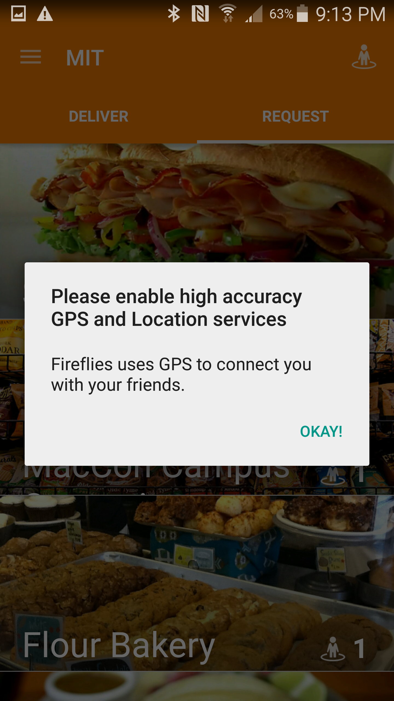
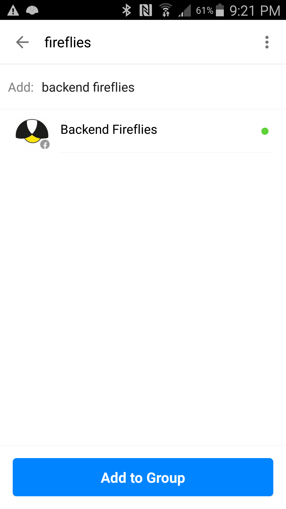
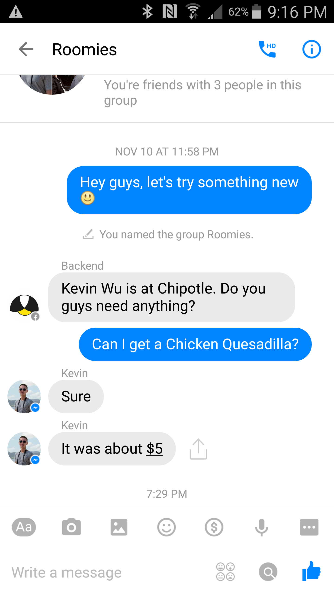

The Fireflies Assistant reminds you when your friends are out at places, and helps you quickly request favors. Now your friends can help you without going out of their way!
1. Download the Fireflies App and Login
2. Enable GPS once you log in.

3. Add Backend Fireflies to your group chat with close friends on FB

4. That’s it! You’re ready to go. Watch the Fireflies Assistant do it’s magic.
